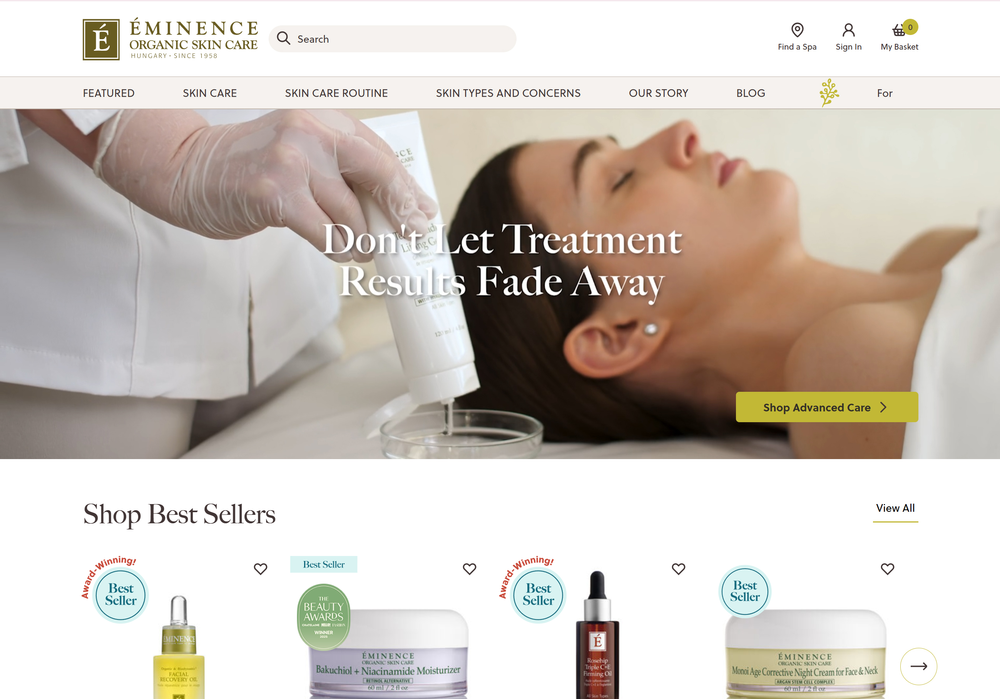
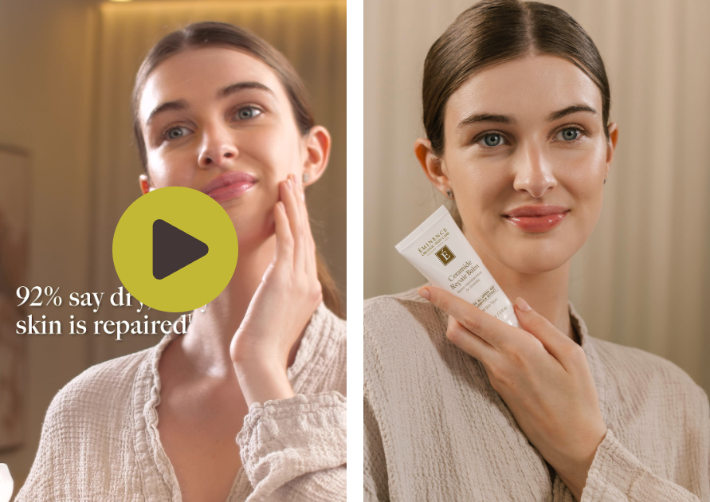

When demand grows faster than the system behind it
As campaign demand expanded across six digital channels, production complexity increased alongside it. Each campaign required a full cycle of concept, shoot and delivery requirements, creating a clear need for a structured system that supports scalability across all assets.
Within this evolving process, photo and video content carried a clear campaign message, translated consistently across platforms, met accessibility standards, and arrived on time with every asset in place.
Build the system while delivering the campaign
The goal was to deliver a full Spring 2026 campaign from concept to launch while creating a production framework that we can use for campaigns in the future.
I developed the process alongside the work, grounding creative direction in performance data, aligning stakeholders early and guiding each stage from analysis through to final delivery.
What F2025 data revealed about the direction
Before shaping the Spring 2026 brief, I analyzed the previous year's creative output from the digital ads and email marketing reports, identifying the asset types that drove performance and guiding production decisions.
Three consistent patterns emerged across channels. Lifestyle imagery and video carried the strongest performance across both ads and email. Collection/CS images, produced from print materials by the marketing operations team, consistently anchored campaign messaging. Lifestyle production was developed to carry that messaging into a human, environmental context across digital channels.
Translating data into a production brief
With the performance analysis complete, the Spring 2026 creative direction was built around the formats that had proven most effective: lifestyle imagery, lifestyle video and collection/CS images. The campaign concept, Transitional Aftercare, was designed specifically to produce this mix of asset types from a single shoot.
Before production began, I developed two foundational documents to support the Digital Team. A Digital Creative Guidelines document defined typography and campaign colour, aligning them with marketing materials and campaign messaging, translating them for digital use, and supporting accessibility standards across six digital platforms. A Lifestyle Photo and Video Concept guided the visual storytelling, shooting environments, prop styling, model's wardrobe, hair and makeup and lighting direction for the photo and video shoots.
Concept to production-ready brief
With the creative direction set, I moved into production planning, documenting and aligning each element of the shoot before the team arrived on set.
- —Full project tracked in Asana from kickoff through to asset delivery
- —Video script and shot list developed around the Transitional Aftercare concept
- —Model screening completed, with a shortlist of three presented to senior leadership for approval
- —Locations scouted for spa and at-home environments
- —Production team assembled, with budget allocated across each role
- —Briefing sessions held with internal creative team and external vendors
I assembled and led a cross-functional production team, coordinating both internal and external partners throughout the shoot.
Shaping the concept on set
On set, I directed the shoot for both environments: the professional spa setting and the at-home aftercare scene. The Transitional Aftercare concept carried a sense of continuity between the two through consistent wardrobe, a shared tonal palette, props and visual cues that connected the spa treatment to the home routine.
Each setup followed the shot list and brief, allowing the final assets to align with channel specifications before moving into post-production.
Review, approval and distribution
After the shoot, I guided the assets through a structured review process. Each deliverable aligned with the Digital Creative Guidelines before moving into stakeholder approval, supporting brand consistency, accessibility compliance, and accuracy across channel specifications.
Once approved, I distributed the assets across six digital channels, formatting each one according to the specifications defined in pre-production.
Brief to screen: the live campaign
The Spring 2026 Advanced Care Collection campaign launched on schedule across all channels. The homepage hero banner, vertical social assets, and product videos came together through the framework developed for this campaign, with performance analysis, briefing, team coordination, production, and delivery documented end to end.


Homepage hero banner and vertical social assets · Spring 2026 Advanced Care Collection · live on eminenceorganics.com
The brief specified soft linen wardrobe in earthy beige tones, natural dewy makeup, warm window-like lighting for the home scene, and bright even lighting for the spa setting. The live assets reflect each of those decisions directly, and are themselves the product of a data-informed creative process.
What the system makes possible next time
The performance analysis, production framework, documentation, and approval stages developed for Spring 2026 now form a foundation for future campaigns. Because each product collection carries its own audience response and evolving social patterns, we will need to perform ongoing testing and refinement.